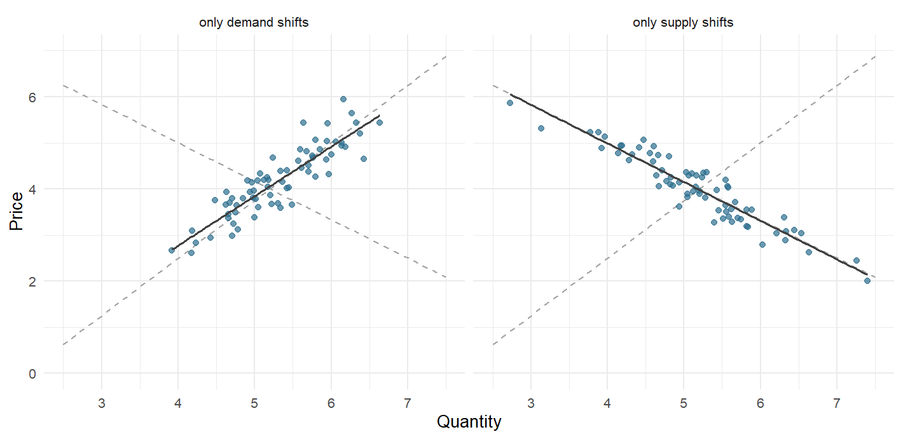
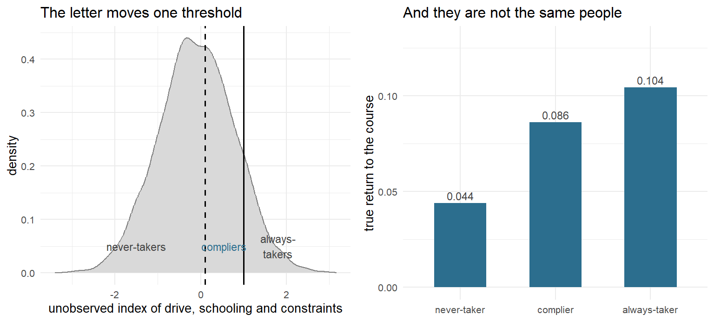
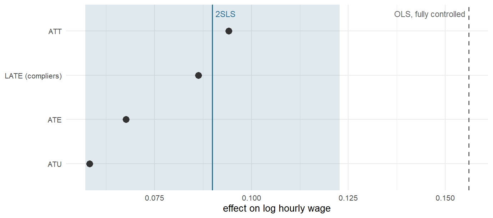
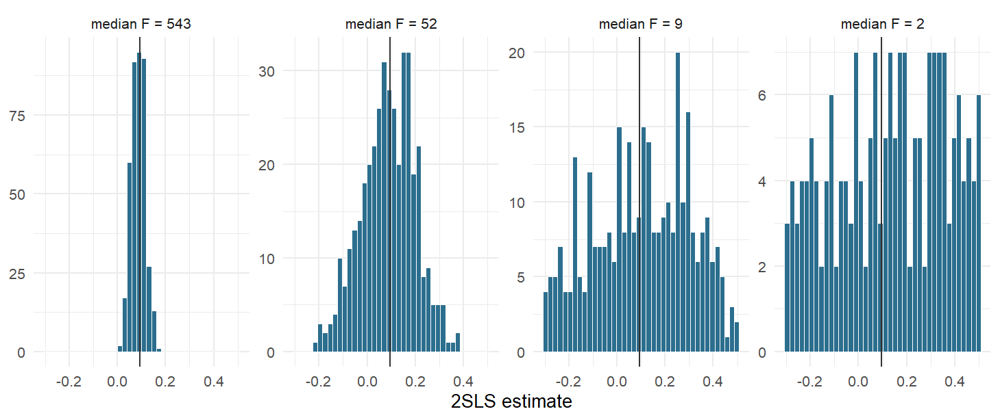
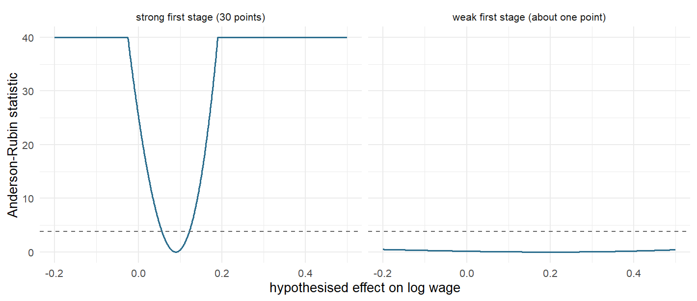
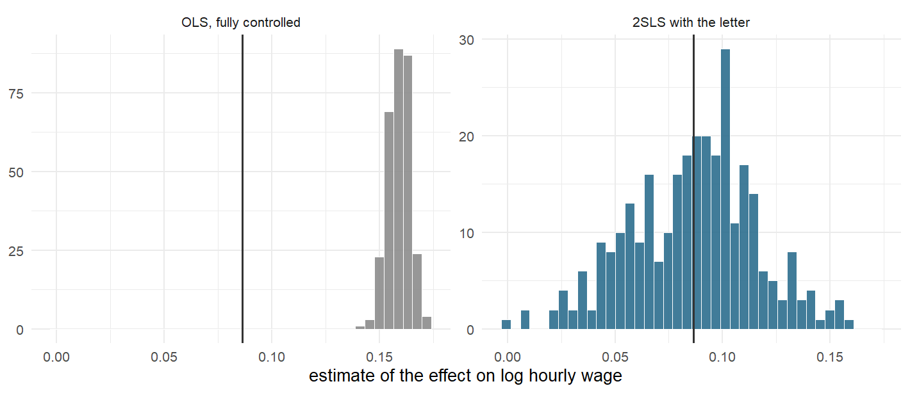

9.5 Instruments
Instrumental-variable methods
9.5.1 A Letter That Nobody Has to Open
The Bundesagentur für Arbeit hands out something called a Bildungsgutschein. It is a voucher for vocational further training, issued under §§ 81 ff. SGB III, and the arithmetic of it is simple: the agency pays the course fee, the person decides whether to sit in the classroom. Nobody is compelled. A voucher is an offer, and an offer can be declined.
Suppose the agency wants to know what the training is worth. It has, in its own files, every person who took a course and every person who did not, and it has their earnings two years later. The comparison is one line of R and it will be wrong, because the people who walk into a classroom on a Monday morning are not the people who do not. They are more ambitious, better organised, closer to a labour market that rewards the effort. Section 9.2 would try to measure that difference and adjust for it. Section 9.3 would try to difference it away. Both need an assumption about the part of ambition that no administrative file records.
Now change one thing. Suppose the agency, running a pilot, draws a random half of the eligible register and sends them a letter — you are entitled to a voucher, here is how to claim it — and sends nothing to the other half. The letter does not put anyone in a classroom. Most people who receive one do nothing at all. But some people who would not otherwise have gone now go, and because the letter went out by lottery, the group that received it is otherwise identical to the group that did not.
That is the entire idea of this section. There is a randomised thing (the letter) that is not the treatment (the course). It is only a nudge, it works on a minority, and it is worthless as a policy in its own right. What it is worth is an argument: whatever difference in earnings appears between the letter group and the no-letter group must have come through the courses, because nothing else about the two groups differs. Divide the earnings gap by the participation gap and the result is a causal effect — for the people the letter moved, and for nobody else.
An instrument is a variable that shoves the treatment around without touching the outcome by any other route. It buys identification the way randomisation does, except that the randomisation happened to something adjacent to the thing you care about.
The pilot above is invented; the voucher is not. The design is not invented at all. It is the oldest identification strategy in econometrics, it is older than the phrase causal inference, and it was first written down by a man studying the price of butter.
9.5.2 What Philip Wright Could Not See
In 1928 the Institute of Economics published a book by Philip Green Wright called The Tariff on Animal and Vegetable Oils. It is a policy monograph about whether a duty on imported oils would raise the domestic price, and to answer that it needs to know how much buyers and sellers respond to price. Wright could not get the number out of the data, and the reason he could not is the reason this section exists.
The problem was already famous. E. J. Working had set it out the year before in the Quarterly Journal of Economics under a title that is itself the question: What Do Statistical "Demand Curves" Show? Suppose you collect, year after year, the price of butter and the quantity sold. You plot the pairs. You fit a line. What have you drawn?
Nothing, is the honest answer. Each point is where a demand curve met a supply curve in that year, and both curves move between years. If demand jumps around while supply sits still, the points trace out the supply curve. If supply jumps around while demand sits still, they trace out demand. If both move — which is what actually happens — the fitted line is a blend of the two, and it is not an estimate of anything.

Figure 9.14: Two markets, one estimator, two opposite answers. The dashed lines are the true demand and supply curves, identical in both panels; the solid line is a regression of price on quantity through the observed pairs. Where demand does the moving the regression recovers supply, and where supply does the moving it recovers demand. Nothing in the scatter says which world you are in.
Wright's answer is in Appendix B, pages 286 to 319.266 He calls the method introducing external factors, and the sentence in which he states it is worth reading slowly:
Such additional factors may be factors which (A) affect demand conditions without affecting cost conditions or which (B) affect cost conditions without affecting demand conditions.
--- Philip G. Wright (1928), quoted in Stock and Trebbi (2003, p. 180)
That is the definition of an instrumental variable, seventeen years before anybody called it that. A factor of type (B) — something that shifts the supply curve and nothing else — pins supply down and lets the demand curve be traced. For flaxseed the natural candidate is yield per acre, which is mostly weather: a good harvest pushes the supply curve out and has no business in anyone's demand for linseed oil.267
Definition
A variable \(z\) is an instrument for the treatment \(d\) in the equation
\[y = \beta_0 + \beta_1 d + \epsilon\]
if it satisfies three conditions:
- Relevance. \(\text{cov}(z, d) \neq 0\) — the instrument actually moves the treatment. Testable.
- Independence. \(z\) is as good as randomly assigned with respect to everything that determines \(y\). Testable only for what you measured.
- Exclusion. \(z\) reaches \(y\) through \(d\) and through no other channel, so that \(\text{cov}(z, \epsilon) = 0\). Not testable, ever.
Under these conditions
\[\beta_1 = \frac{\text{cov}(z, y)}{\text{cov}(z, d)}\]
which is the ratio Wright wrote down. Everything below is a way of computing it.
Notice what the third condition costs. Relevance you can check in the data. Independence you can probe, imperfectly, by looking for imbalance in measured covariates. Exclusion is a claim about a quantity — the error term — that you have never seen and never will. It is defended by argument, by institutional detail, by knowing where the variation came from. It is never defended by a p-value. Almost everything that goes wrong with instrumental variables in practice goes wrong there.
Your Turn
Three conditions, three very different epistemic statuses. Match each to what the data can say about it.
Relevance is .
Independence is .
Exclusion is .
Which of the three does a first-stage F statistic speak to?
And the sentence to carry through the section. An instrument that is exactly valid can afford to be weak; an instrument that is almost valid .
The son who did not write it
For decades the credit for Appendix B went to the wrong Wright.
Philip's son was Sewall Wright, the geneticist who invented path analysis and one of the three founders of population genetics. Appendix B contains a path-analytic derivation in exactly his style, and from Goldberger (1972) onwards a series of distinguished economists concluded that the son must have written it — perhaps the appendix, perhaps the whole idea. Angrist and Krueger, writing in 2001, still put it in a footnote: "It is quite likely that Sewall Wright deserves much of the credit for his father's use of instrumental variables."
Two years later James Stock and Francesco Trebbi settled the question, and they settled it with a method borrowed from literary scholarship. They took 69 function-word frequencies and 18 grammatical statistics — the fingerprints of prose style, the same technique Mosteller and Wallace had used on the disputed Federalist Papers — reduced them by principal components, and ran a linear discriminant against known writings of father and son. Their verdict, in the Journal of Economic Perspectives 17(3), pages 177 to 194: "The stylometric evidence clearly points to Philip G. Wright."
Principal components, from Section 8.1, used to decide who invented instrumental variables.
9.5.3 From Measurement Error to Simultaneity
Wright's appendix sank without trace. What happened next happened somewhere else, for a different reason, and only later turned out to be the same thing.
The Oslo school of the 1930s was worried about errors in variables. Ragnar Frisch's Statistical Confluence Analysis by Means of Complete Regression Systems (1934) asks what happens to a regression when the regressors are measured with noise, which in economic time series they always are. A mismeasured regressor is correlated with the equation's error by construction, and its coefficient is pulled towards zero. Frisch's own remedy, the bunch map, was a diagnostic rather than an estimator.
Two answers came out of that tradition. Abraham Wald, in the Annals of Mathematical Statistics in 1940, proposed splitting the sample into two groups and taking the ratio of the difference in mean \(y\) to the difference in mean \(x\). That is algebraically identical to instrumental variables with a binary instrument, which is why the ratio in the definition box above is called the Wald estimator. And Olav Reiersøl, in a 1945 dissertation titled Confluence Analysis by Means of Instrumental Sets of Variables, gave the thing its name.268
Meanwhile Trygve Haavelmo was making Wright's problem respectable. His 1943 Econometrica paper The Statistical Implications of a System of Simultaneous Equations, and the enormous 1944 supplement The Probability Approach in Econometrics, established that when an equation sits inside a system — when price is determined jointly with quantity — ordinary least squares on that equation is not merely imprecise but inconsistent, and no quantity of data will save it. He received the Nobel Memorial Prize in 1989 "for his clarification of the probability theory foundations of econometrics and his analyses of simultaneous economic structures".
The Cowles Commission then spent a decade building the machinery. Anderson and Rubin's Estimation of the Parameters of a Single Equation in a Complete System of Stochastic Equations (1949) gave the first workable estimator, limited information maximum likelihood, and — as Section 9.5.13 will show — a test that has aged rather better than the estimator has. Two-stage least squares arrived twice: in two unpublished memoranda by Henri Theil at the Dutch Central Planning Bureau in 1953, and in Robert Basmann's Econometrica paper of 1957. James Durbin (1954) noticed that the errors-in-variables people and the simultaneous-equations people had built the same estimator, and J. D. Sargan (1958) supplied the overidentification test that carries his name.
By 1960 instrumental variables was a technique for fitting systems of macroeconomic equations, taught as an answer to simultaneity and mostly forgotten as an answer to anything else. What changed was not the algebra.
Reading
James H. Stock and Francesco Trebbi, "Retrospectives: Who Invented Instrumental Variable Regression?", Journal of Economic Perspectives 17(3), 2003, 177–194 — the detective story, and a clear account of what Appendix B actually does.
Joshua D. Angrist and Alan B. Krueger, "Instrumental Variables and the Search for Identification: From Supply and Demand to Natural Experiments", Journal of Economic Perspectives 15(4), 2001, 69–85 — the same history told by the people who changed what the method was for.
9.5.4 What Changed Was the Instrument
In 1990 Joshua Angrist published a paper in the American Economic Review about the Vietnam draft lottery. Between 1970 and 1973 the United States assigned a random sequence number, 1 to 365, to every birth date; men whose number fell below a ceiling were draft-eligible. Eligibility did not determine service — some eligible men were never drafted, some ineligible men volunteered — but it shifted the probability sharply, and it was drawn from a drum on television. Angrist matched the lottery to Social Security earnings records and divided. White veterans, he found, were earning about 15% less in the early 1980s than comparable non-veterans.269
Nothing about that is a system of equations. The instrument is not a supply shifter; it is a lottery, and the identification comes from the institution that ran it. Within a decade the method had been turned inside out. Instead of asking what estimator fits a model, economists began asking where in the world somebody had accidentally run an experiment. That question is Section 9.1.10; instrumental variables is the machinery that answers it.
The studies below are the catalogue. Read the middle column first — the instrument is the paper.
Two things about that table. The first is that no two instruments are alike: a lottery, a birthday, a map, a coin toss in the genome, a bureaucrat's caseload. There is no method for finding one. The second is that the strongest entries — the lottery, the judge, the examiner, the genetic variant — are all things that were randomised by somebody, whether a government or meiosis. That is not a coincidence, and Section 9.5.17 comes back to it.
Your Turn
The table above is sortable and searchable. Sort by Year.
The earliest study in the catalogue is from , the latest from .
Now sort by Field. Four of the ten are labour economics. Type judge and
then examiner into the search box: two studies use the same trick, the random
assignment of a case to an official. What makes that a good instrument?
One row has an instrument that nobody designed, nobody legislated and nobody drew from a drum. Which?
And a reading question about the middle column. In how many of the ten rows is the instrument itself something a policy-maker could change?
9.5.5 The Idea in Four Numbers
Strip the algebra away and an instrumental-variables study is four numbers.
Take the letter from the opening. Compute mean earnings among the people who got a letter and mean earnings among the people who did not; the difference is the intention-to-treat effect, and it is a perfectly honest causal quantity — the effect of sending letters, which is what a minister could actually decide to do. Then compute the participation rate in each group; that difference is the first stage, the amount of treatment the letter bought. The intention-to-treat effect is small because the letter moved few people. Dividing one by the other scales the small honest number up by the fraction of people it worked on.
\[\hat{\beta}_{\text{IV}} = \frac{\bar{y}_{z=1} - \bar{y}_{z=0}}{\bar{d}_{z=1} - \bar{d}_{z=0}} = \frac{\text{intention to treat}}{\text{first stage}}\]
That is the Wald estimator. Everything else in this section is either a way of computing it with covariates in the way (Section 9.5.9), a warning about what happens when the denominator is small (Section 9.5.11), or a question about whose effect the answer is (Section 9.5.10).
The denominator is the whole danger. If the letter moves participation by thirty percentage points, you are dividing by 0.3 and multiplying every error in the numerator — including every violation of the exclusion restriction — by 3.3. If it moves participation by one percentage point, you are multiplying them by 100. A weak instrument is not merely imprecise. It is fragile, in a way the printed standard error does not reveal.
9.5.6 A Programme We Can Check
As in Sections 9.2.2 and 9.3.3, the honest way to see what an
estimator does is to build a world in which the answer is already known. The
function below is that world. Twelve thousand people on the register; a coin
decides who gets a letter; each person has an unobserved drive — drive,
ambition, whatever you want to call it — which raises their wage, raises their
chance of taking a course, and raises how much the course is worth to them.
That last clause is what makes the example hard. If the returns were the same for everybody, selection would be a nuisance. Because the people most likely to enrol are also the people who gain most from enrolling, there is no single number called "the effect of the course", and the choice of estimator becomes a choice of whose effect to estimate.
simulate_pilot <- function(n = 12000, seed = 1848, arms = 2,
strength = 1, violation = 0) {
set.seed(seed)
drive <- rnorm(n) # unobserved, and decisive
age <- round(runif(n, 25, 58))
female <- rbinom(n, 1, 0.48)
schooling <- pmin(pmax(round(11 + 1.8 * rnorm(n) + 0.7 * drive), 8), 18)
wage0 <- 2.55 + 0.045 * schooling + 0.004 * (age - 40) -
0.09 * female + 0.07 * drive + rnorm(n, 0, 0.16)
arm <- sample(0:(arms - 1), n, replace = TRUE) # the lottery
letter <- as.integer(arm >= 1) # letter, or no letter
call <- as.integer(arm == 2) # letter plus a phone call
# what each person would do under each arm, monotone in one index
index <- 0.80 * drive + 0.10 * (schooling - 11) - 0.20 * female
d0 <- as.integer(index > 1.00) # goes with no letter
d1 <- as.integer(index > 1.00 - 0.90 * strength) # goes with a letter
d2 <- as.integer(index > 1.00 - 1.30 * strength) # goes with letter and call
attends <- ifelse(arm == 0, d0, ifelse(arm == 1, d1, d2))
type <- ifelse(d0 == 1, "always-taker",
ifelse(d1 == 1, "complier",
ifelse(d2 == 1, "late complier", "never-taker")))
# the return to the course, rising in the same drive that drives take-up
tau <- 0.030 + 0.075 * pnorm(drive) + 0.010 * (schooling - 11) / 4
wage <- wage0 + tau * attends + 0.055 * drive +
violation * letter + rnorm(n, 0, 0.13)
tibble(id = seq_len(n), arm, letter, call, attends, type,
tau, drive, age, female, schooling, wage0, wage)
}
pilot <- simulate_pilot()wage is a log hourly wage, so a coefficient of 0.09 means roughly nine per
cent. strength is a dial for how hard the letter pushes, violation a dial for
the letter having a direct effect on wages; both are switched off for now and
both come back later. The arms argument adds a third treatment arm, used once,
in Section 9.5.14.
Here is the world in two pictures. The left panel is the design: a threshold on an index nobody observes, and a letter that moves the threshold. The right panel is why the design matters.

Figure 9.15: Left: the unobserved index that decides participation, with the two thresholds the letter moves between. Everyone to the right of the solid line goes anyway, everyone between the lines goes only if the letter arrives, everyone to the left never goes. Right: the true return to the course by type. The three groups are not interchangeable, which is the whole difficulty of this section.
Because we built the world, we can write down every quantity an economist might mean by "the effect of the course" and watch them come out as four different numbers.
| Quantity | Truth |
|---|---|
| ATE --- everyone on the register | 0.0677 |
| ATT --- those who actually took a course | 0.0942 |
| ATU --- those who did not | 0.0583 |
| LATE --- those the letter moved (compliers) | 0.0863 |
The register splits into 11.2% always-takers, 30.5% compliers and 41.1% never-takers. You will never see this table in a real study. Which type a given person belongs to is unknowable — we observe what they did under the arm they were given, never under the other one — and Section 9.5.10 shows how much of it can be recovered anyway.
Your Turn
Four numbers, four questions, one data set.
Which of the four will the letter identify?
The ATT (0.0942) is larger than the ATU (0.0583). What does that ordering tell you about who enrols?
The LATE (0.0863) sits between the two. Is that a coincidence?
True or false: with a different instrument, the same data would give a different LATE, and neither estimate would be wrong.
9.5.7 What the Naive Comparison Says
Start where a competent analyst without an identification strategy would start.
lm(wage ~ attends, data = pilot) %>% summary() %>% coef() %>% round(4)
#> Estimate Std. Error t value Pr(>|t|)
#> (Intercept) 2.9446 0.0027 1101.5393 0
#> attends 0.3463 0.0052 66.2408 0Thirty-five log points. Now add everything the agency's files contain — age, sex, years of schooling — and then, going well beyond what any real file offers, the person's own baseline wage.
control_sets <- list(
"raw difference" = lm(wage ~ attends, data = pilot),
"+ age, sex, schooling" = lm(wage ~ attends + age + female + schooling,
data = pilot),
"+ baseline wage" = lm(wage ~ attends + age + female + schooling + wage0,
data = pilot))
tibble(Specification = names(control_sets),
Estimate = sapply(control_sets, function(m) coef(m)["attends"]),
`Std. error` = sapply(control_sets,
function(m) sqrt(diag(vcov(m)))["attends"]),
`True LATE` = mean(pilot$tau[pilot$type == "complier"])) %>%
knitr::kable(digits = 4, row.names = FALSE,
caption = "Three regressions, each better controlled than the last, converging on the wrong answer. The truth for the group an instrument will identify is in the final column; every specification sits above it, and the standard errors are so small that no interval comes close.")| Specification | Estimate | Std. error | True LATE |
|---|---|---|---|
| raw difference | 0.3463 | 0.0052 | 0.0863 |
| + age, sex, schooling | 0.2604 | 0.0051 | 0.0863 |
| + baseline wage | 0.1561 | 0.0031 | 0.0863 |
The controls help, a great deal in fact, because we handed the model the baseline wage, which absorbs most of what drive does to earnings. And the best-controlled specification is still nearly double the true return for the group we will actually be able to learn about, with a standard error that misses the truth by a factor of twenty.
This is the pattern from Section 9.2 in a different costume: adding controls moves the estimate a long way and never tells you whether it has moved far enough. Between the second row and the third the estimate falls by ten log points. There is no diagnostic in the output that says "and it should fall by another seven".
Your Turn
The three specifications gave 0.3463, 0.2604 and 0.1561. The truth for compliers is 0.0863, and the best-controlled standard error is 0.0031.
The best specification is off by log points, which is about standard errors.
The controls did help — a great deal. Why is that the dangerous part?
The third specification adds the person's own baseline wage, which no real administrative file contains. If you removed it, the estimate would move .
9.5.8 The Wald Ratio by Hand
Now use the lottery. Four numbers, computed with group_by().
four_numbers <- pilot %>%
group_by(letter) %>%
summarise(n = n(), participation = mean(attends), wage = mean(wage))
four_numbers
#> # A tibble: 2 × 4
#> letter n participation wage
#> <int> <int> <dbl> <dbl>
#> 1 0 6077 0.113 3.02
#> 2 1 5923 0.414 3.05itt <- diff(four_numbers$wage) # intention to treat
first_stage <- diff(four_numbers$participation) # the first stage
c(itt = itt, first_stage = first_stage, wald = itt / first_stage)
#> itt first_stage wald
#> 0.02703812 0.30059253 0.08994941The letter raised participation by thirty percentage points and raised average log wages by not quite three. Neither number is the effect of a course. Their ratio is — for the people the letter moved.
The intention-to-treat effect is the effect of the policy. The Wald ratio is the effect of the treatment, for compliers. A minister deciding whether to send letters wants the first; a person deciding whether to enrol wants the second. Reporting only one of them is a decision about whose question you are answering.
Your Turn
The letter raised participation from 0.113 to 0.414 and mean log wages by 0.027.
The first stage is and the Wald ratio .
Which of the two numbers — the intention-to-treat effect or the Wald ratio — would you put in a briefing note for the minister who has to decide whether to send the letters?
True or false: the intention-to-treat effect is biased downwards because most recipients ignored the letter.
It is not biased at all. It is an unbiased estimate of a different quantity — the effect of sending letters to everybody, ignorers included. Calling it "attenuated" imports the assumption that the effect of the course is the question, when the effect of the policy is a perfectly good question of its own.
9.5.9 Two Stages, and Why the Second One Lies
The Wald ratio works only when the instrument is binary and nothing else is in the model. Two-stage least squares is the generalisation. Regress the treatment on the instrument and keep the fitted values — the part of participation the lottery explains, and therefore the part that cannot be contaminated by drive — then put those fitted values into the outcome equation in place of the treatment.
stage1 <- lm(attends ~ letter, data = pilot)
stage2 <- lm(pilot$wage ~ fitted(stage1))
coef(summary(stage2)) %>% round(4)
#> Estimate Std. Error t value Pr(>|t|)
#> (Intercept) 3.0116 0.0054 559.6636 0
#> fitted(stage1) 0.0899 0.0178 5.0404 0The point estimate is exactly the Wald ratio. The standard error is wrong.
It is wrong for a reason worth understanding rather than memorising. lm()
computes the second-stage standard error from that regression's own residuals,
which are \(y - \hat{\beta} \hat{d}\). The residual you actually want is
\(y - \hat{\beta} d\), built from the real treatment rather than its fitted shadow.
The two differ, and there is no rule about which direction the error goes. Do it
properly and the software takes care of it:
iv <- ivreg(wage ~ attends | letter, data = pilot)
summary(iv, diagnostics = TRUE)
#>
#> Call:
#> ivreg(formula = wage ~ attends | letter, data = pilot)
#>
#> Residuals:
#> Min 1Q Median 3Q Max
#> -1.022689 -0.187204 -0.002348 0.183279 1.248342
#>
#> Coefficients:
#> Estimate Std. Error t value Pr(>|t|)
#> (Intercept) 3.01162 0.00505 596.324 < 0.0000000000000002 ***
#> attends 0.08995 0.01675 5.371 0.00000008 ***
#>
#> Diagnostic tests:
#> df1 df2 statistic p-value
#> Weak instruments 1 11998 1589.4 <0.0000000000000002 ***
#> Wu-Hausman 1 11997 327.2 <0.0000000000000002 ***
#> Sargan 0 NA NA NA
#> ---
#> Signif. codes: 0 '***' 0.001 '**' 0.01 '*' 0.05 '.' 0.1 ' ' 1
#>
#> Residual standard error: 0.2757 on 11998 degrees of freedom
#> Multiple R-Squared: 0.121, Adjusted R-squared: 0.121
#> Wald test: 28.84 on 1 and 11998 DF, p-value: 0.00000007996The formula syntax is outcome ~ regressors | instruments. Everything left of
the bar is the model you want; everything right of it is the list of variables
allowed to be exogenous. Exogenous controls therefore appear on both sides,
which trips up everybody exactly once:
ivreg(wage ~ attends + age + female + schooling |
letter + age + female + schooling, data = pilot) %>%
summary() %>% coef() %>% head(2) %>% round(4)
#> Estimate Std. Error t value Pr(>|t|)
#> (Intercept) 2.1399 0.0189 113.1079 0
#> attends 0.0927 0.0144 6.4326 0summary(iv, diagnostics = TRUE) prints three tests that no
instrumental-variables table should be without. Weak instruments is the
first-stage F on the excluded instruments — Section
9.5.11. Wu-Hausman asks whether the IV and OLS
estimates differ by more than sampling noise, which is a test of whether the
treatment was endogenous at all. Sargan is the overidentification test, blank
here because with one instrument and one endogenous regressor there is nothing to
overidentify — Section 9.5.14.
Your Turn
The letter raised participation from 11.3% to 41.4% and average log wages by 0.027.
The Wald ratio, to two decimal places, is .
Now suppose only half as many people had responded to the letter — a first stage of fifteen points instead of thirty — while the intention-to-treat effect stayed the same. The Wald ratio would be .
And the harder one. In that world, is the estimate more or less sensitive to a small direct effect of the letter on wages?
9.5.10 Who Is the Answer About?
The estimate is 0.0899. The average treatment effect in this population is 0.0677. These are not the same number, and the estimator is not making a mistake.
Imbens and Angrist worked out what the ratio identifies in a 1994 Econometrica note, and Angrist, Imbens and Rubin gave the pieces their names in the Journal of the American Statistical Association two years later. Divide the population by what each person would do under each value of the instrument:
Definition
With a binary instrument \(z\) and a binary treatment \(d\), write \(d(1)\) and \(d(0)\) for what a person would do with and without the instrument. Four types exhaust the population:
| \(d(0) = 0\) | \(d(0) = 1\) | |
|---|---|---|
| \(d(1) = 0\) | never-taker | defier |
| \(d(1) = 1\) | complier | always-taker |
Monotonicity is the assumption that there are no defiers: the instrument pushes everybody in the same direction, or leaves them alone. Under relevance, independence, exclusion and monotonicity the Wald ratio identifies
\[\text{LATE} = E[\tau_i \mid d_i(1) > d_i(0)]\]
the local average treatment effect — the average effect among compliers, and among nobody else.
Compliers are not a group you can point at. Anybody who took a course after receiving a letter is either a complier or an always-taker, and no data will separate them. What can be recovered is the size of the group and its average characteristics, and both fall out of the same trick: the first stage is the complier share.
c(estimated = unname(first_stage),
truth = mean(pilot$type == "complier"))
#> estimated truth
#> 0.3005925 0.3045833Averages of covariates among compliers come from a difference of the same shape. Take the mean of \(x \cdot d\) in the letter group, subtract it in the no-letter group, divide by the first stage.
complier_mean <- function(x) {
z <- pilot$letter
d <- pilot$attends
(mean(x * d * z) / mean(z) -
mean(x * d * (1 - z)) / mean(1 - z)) / first_stage
}
tibble(Variable = c("years of schooling", "age", "share women"),
`Compliers (estimated)` = c(complier_mean(pilot$schooling),
complier_mean(pilot$age),
complier_mean(pilot$female)),
`Compliers (truth)` = c(mean(pilot$schooling[pilot$type == "complier"]),
mean(pilot$age[pilot$type == "complier"]),
mean(pilot$female[pilot$type == "complier"])),
`Whole register` = c(mean(pilot$schooling), mean(pilot$age),
mean(pilot$female))) %>%
knitr::kable(digits = 3,
caption = "Who the compliers are, estimated from observable data and checked against the truth. They have more schooling than the register as a whole, which is exactly the group a letter about a training voucher would be expected to move.")| Variable | Compliers (estimated) | Compliers (truth) | Whole register |
|---|---|---|---|
| years of schooling | 11.703 | 11.753 | 11.067 |
| age | 41.190 | 41.265 | 41.454 |
| share women | 0.457 | 0.450 | 0.481 |
That table is the most under-used diagnostic in applied work. It costs three lines, and it turns an abstract complaint — "LATE is only for compliers" — into a concrete description of a group the reader can picture.
Your Turn
The estimated complier share was 0.3006 against a truth of 0.3046, and the estimated complier schooling 11.70 against a truth of 11.75. The register as a whole averages 11.07 years.
So the compliers have about more years of schooling than the register.
Where did the estimate of the complier share come from? It is not a new calculation.
Can you point at an individual complier in the data?
True or false: the complier profile can be computed for any covariate measured before the instrument was assigned.

Figure 9.16: Every estimand in this world, with the instrumental-variables estimate and its interval laid over them. The estimator lands on the local average treatment effect and misses the population average by a third; the fully controlled regression misses everything.
Truly Dedicated: the objection Deaton makes
Not everybody finds the local average treatment effect a satisfying answer. Angus Deaton, in the Journal of Economic Literature in 2010, put the objection about as sharply as it can be put:
Instead, we have a procedure in which the choice of the instrument, which is guided by criteria designed for a situation in which there is no heterogeneity, is implicitly allowed to determine the parameter of interest. This goes beyond the old story of looking for an object where the light is strong enough to see; rather, we have at least some control over the light, but choose to let it fall where it may, and then proclaim that whatever it illuminates is what we were looking for all along.
James Heckman and Sergio Urzúa make a related argument in the Journal of Econometrics the same year: an instrument answers the question it happens to pose, and the question a policy-maker asked is generally a different one.
The reply, which is Imbens's in the same issue, is that a well-defined local answer is worth more than an ill-defined global one, and that the complier population can be described — see the table above — rather than left as a mystery. Both sides are right about something. Neither side disputes the empirical fact: change the instrument and the number changes, because the compliers changed.
9.5.11 When the Instrument Is Weak
Everything above assumed a letter that moved thirty per cent of the register.
Most instruments in the literature move far less. Turn the strength dial down
and watch.
weak_study <- function(strength, draws = 400) {
out <- lapply(seq_len(draws), function(i) {
d <- simulate_pilot(n = 4000, seed = 20000 + i, strength = strength)
fs <- lm(attends ~ letter, data = d)
m <- ivreg(wage ~ attends | letter, data = d)
tibble(F = unname(summary(fs)$fstatistic[1]),
iv = unname(coef(m)["attends"]),
se = unname(sqrt(diag(vcov(m)))["attends"]),
late = mean(d$tau[d$type == "complier"]))
})
bind_rows(out) %>% mutate(strength = strength)
}
weak_draws <- bind_rows(lapply(c(1, 0.35, 0.15, 0.07), weak_study))| letter strength | median F | true LATE | median estimate | 10th pct | 90th pct | share absurd | coverage |
|---|---|---|---|---|---|---|---|
| 1.00 | 542.929 | 0.086 | 0.086 | 0.047 | 0.121 | 0.000 | 0.945 |
| 0.35 | 51.692 | 0.095 | 0.091 | -0.065 | 0.217 | 0.245 | 0.955 |
| 0.15 | 8.720 | 0.098 | 0.086 | -0.424 | 0.414 | 0.588 | 0.960 |
| 0.07 | 1.834 | 0.098 | 0.182 | -1.031 | 1.265 | 0.830 | 0.980 |
Read the coverage column last, and read it carefully. It sits at the nominal 95% in the first row and rises from there. A reader checking only whether the confidence interval covers the truth would conclude that nothing is wrong. What has happened is that the intervals have grown so wide that they cover everything — zero, the OLS answer, numbers no economist would defend. The estimator has not become biased so much as uninformative, and an uninformative answer that arrives with stars beside it is worse than no answer at all.
Your Turn
Read the last row of the table: median F of 1.8, and the share of studies reporting a negative or absurd return is .
Read the coverage column instead. It goes 0.945, 0.955, 0.960, 0.980. A referee who checks only coverage would conclude
Coverage rises as the instrument weakens. Why?
And a question worth sitting with. Between the first row and the last, which has changed more: the location of the sampling distribution, or its spread?

Figure 9.17: The sampling distribution of the two-stage least squares estimate at four instrument strengths, truncated to a readable range. The vertical line is the truth. As the first stage weakens the distribution does not shift so much as spread, growing tails far beyond anything the reported standard error suggests.
9.5.12 The F Statistic and Its Thresholds
The standard summary of instrument strength is the F statistic on the excluded instruments in the first stage. Its folklore is worth unpicking, because most of what gets said about it in seminars is a little bit wrong.
The number everybody quotes is ten, and it comes from a remark rather than a theorem. Douglas Staiger and James Stock, in Econometrica in 1997, wrote that "it is our impression that, in applications of two-stage least squares (TSLS), it is common for the first stage F statistic … to take on a value less than 10." The profession turned an observation about what is common into a threshold for what is acceptable.
Stock and Yogo (2005) did the work properly and produced tables of critical values, and those tables say two different things depending on what you are afraid of. If you are afraid of bias — of two-stage least squares drifting back towards ordinary least squares — the critical values sit around nine to fourteen and ten is a fair approximation. Note what that concedes: the relative-bias tables exist only for three instruments or more, so the familiar rule has nothing to say about the just-identified case this section is mostly about. If you are afraid of size — of a nominal 5% test rejecting far more often than five per cent of the time — the numbers are larger, and they are tabulated for one instrument. With one endogenous regressor and one instrument, the value that keeps the true size of a 5% test below 10% is 16.38.
Then Lee, McCrary, Moreira and Porter, in the American Economic Review in 2022, showed that even that is optimistic. In the just-identified case, the conventional \(t\)-test with the usual 1.96 cut-off attains correct size only if the first-stage F exceeds 104.7.
| Threshold | Source | What it promises |
|---|---|---|
| 10 | Staiger & Stock (1997), as folklore | roughly, that 2SLS bias stays under a tenth of the OLS bias --- a statement about the point estimate only |
| 16.38 | Stock & Yogo (2005), one instrument | that a nominal 5% Wald test really rejects at most 10% of the time --- a statement about size |
| 104.7 | Lee, McCrary, Moreira & Porter (2022) | that the conventional t-test with the 1.96 cut-off is valid at the 5% level in the just-identified case |
The authors of the third paper went and looked. Across 1,311 single-instrument specifications in 61 AER papers, roughly a quarter of the results significant at the 5% level with an F above ten stop being significant once the correction is applied.
Card's college-proximity instrument in Section 9.5.16 has a first-stage F of about thirteen. That clears the folklore threshold, sits below the Stock-Yogo size threshold, and is an order of magnitude below what Lee and co-authors require. It is one of the most cited instruments in economics.
Your Turn
Three thresholds for one statistic. Match each to what it promises.
The value 10 promises something about .
The value 16.38 promises something about .
The value 104.7 promises something about .
Card's instrument has an F of . It clears the first threshold and fails the other two.
And the awkward one. The relative-bias tables that give rise to the "10" are computed for three instruments or more. What follows for a study with exactly one instrument?
9.5.13 Inference That Survives a Weak Instrument
If the F statistic is a diagnostic that arrives too late, the alternative is not to diagnose better but to use a procedure that does not care. The Anderson-Rubin test — the same Anderson and Rubin, the same 1949 paper — is that procedure, and it works by refusing to estimate anything.
To test whether the true effect equals some particular value \(b\), subtract it out. Under that null the quantity \(y - b\,d\) contains no treatment effect at all, so if the instrument is valid it should be unrelated to the instrument. Regress it on \(z\) and test the coefficient. Repeat over a grid of \(b\) and keep every value the data cannot reject.
ar_statistic <- function(data, b) {
rest <- data$wage - b * data$attends
summary(lm(rest ~ data$letter))$coefficients[2, 3]^2 # squared t
}
b_grid <- seq(-0.2, 0.5, by = 0.0005)
ar_strong <- vapply(b_grid, function(b) ar_statistic(pilot, b), numeric(1))
kept <- b_grid[ar_strong < qchisq(0.95, df = 1)]
range(kept)
#> [1] 0.0565 0.1220Compare that with the interval ivreg() implies:
Practically identical, and they should be: with a first stage this strong the conventional approximation is excellent. Now run the same two calculations in a world where the letter barely works.
pilot_weak <- simulate_pilot(strength = 0.05)
iv_weak <- ivreg(wage ~ attends | letter, data = pilot_weak)
ar_weak <- vapply(b_grid,
function(b) ar_statistic(pilot_weak, b), numeric(1))
c(share_of_grid = mean(ar_weak < qchisq(0.95, df = 1)),
conventional_lower = unname(coef(iv_weak)["attends"] -
1.96 * sqrt(diag(vcov(iv_weak)))["attends"]),
conventional_upper = unname(coef(iv_weak)["attends"] +
1.96 * sqrt(diag(vcov(iv_weak)))["attends"]))
#> share_of_grid conventional_lower conventional_upper
#> 1.0000000 -0.7215127 1.1273217The Anderson-Rubin set is the entire grid. Every value of the treatment effect we tried — every one — is consistent with the data at the 5% level, which is the correct answer, because a letter that moves almost nobody tells you almost nothing. The conventional interval, meanwhile, is finite and prints a respectable-looking pair of numbers.

Figure 9.18: The Anderson-Rubin statistic against the hypothesised treatment effect, for a strong and a weak instrument. Where the curve dips below the dashed critical value the effect cannot be rejected. On the left the curve rises steeply on both sides and the set is a short interval; on the right it never rises at all, and the honest confidence set is unbounded.
An unbounded confidence set is not a failure of the method. It is the method telling you the truth about how much the data know. A procedure that always returns a tidy interval is not being more informative; it is being less honest.
Your Turn
With the strong instrument the Anderson-Rubin set ran from 0.057 to 0.122 and
the conventional interval from 0.057 to 0.123. With the weak one, the
Anderson-Rubin set was
while ivreg() printed a finite interval from \(-0.72\) to \(1.13\).
The Anderson-Rubin test works by refusing to do one thing. What?
Why does that make it immune to a weak first stage?
True or false: an Anderson-Rubin set that covers the whole grid means the instrument is invalid.
Andrews, Stock and Sun surveyed the practice in the Annual Review of Economics in 2019, and their recommendation for the single-instrument case is exactly this: report the identification-robust interval. They also counted. Of seventeen AER papers between 2014 and 2018 with "instrument" in the abstract, fifteen reported at least one first-stage F — and many of those were below ten.
9.5.14 Testing What Can Be Tested
With two instruments and one endogenous regressor there is a degree of freedom left over, and it can be spent on a test. Give the pilot a third arm: some people get the letter, some get the letter and a phone call from an adviser, some get nothing.
pilot3 <- simulate_pilot(arms = 3)
pilot3 %>%
group_by(arm) %>%
summarise(n = n(), participation = mean(attends), wage = mean(wage))
#> # A tibble: 3 × 4
#> arm n participation wage
#> <int> <int> <dbl> <dbl>
#> 1 0 3900 0.123 3.03
#> 2 1 4032 0.411 3.05
#> 3 2 4068 0.586 3.07Each arm gives its own Wald ratio against the control group:
a <- pilot3 %>% group_by(arm) %>% summarise(w = mean(wage), d = mean(attends))
c(`letter only` = (a$w[2] - a$w[1]) / (a$d[2] - a$d[1]),
`letter plus call` = (a$w[3] - a$w[1]) / (a$d[3] - a$d[1]))
#> letter only letter plus call
#> 0.07239368 0.08703625Two-stage least squares with both instruments combines them, and Sargan's test asks whether the combination was reasonable:
iv3 <- ivreg(wage ~ attends | letter + call, data = pilot3)
summary(iv3, diagnostics = TRUE)$diagnostics %>% round(4)
#> df1 df2 statistic p-value
#> Weak instruments 2 11997 1091.2923 0.0000
#> Wu-Hausman 1 11997 471.9152 0.0000
#> Sargan 1 NA 0.6103 0.4347Sargan is comfortable. Here is what that comfort is worth. In this world the two instruments identify different local effects — the phone call reaches a group with lower returns, and the true LATEs are 0.0863 and 0.0795 respectively — and the test cannot see it, because sampling noise in the two ratios is larger than the gap between them.
An overidentification test asks whether your instruments agree with each other. It does not ask whether they are valid. Two instruments that violate the exclusion restriction in the same direction will pass it comfortably, and two perfectly valid instruments identifying two genuinely different local effects will fail it. A passed Sargan test is a weak piece of evidence dressed as a strong one.
Your Turn
In the three-arm world the two instruments identify genuinely different local effects, and Sargan is comfortable anyway.
Sargan's null hypothesis is that .
A failed Sargan test tells you .
With one instrument and one endogenous regressor, the Sargan row of
summary(iv, diagnostics = TRUE) is blank. Why?
9.5.15 The Exclusion Restriction Is an Argument
In our world the letter has no effect on wages except through the course. Turn
the violation dial and it does — imagine the letter also carries a page of
job-search advice, or simply reminds the recipient that the agency is watching.
violation_table <- lapply(c(0, 0.002, 0.005, 0.010, 0.020), function(v) {
strong <- simulate_pilot(violation = v)
weak <- simulate_pilot(violation = v, strength = 0.15)
tibble(`direct effect` = v,
`first stage (strong)` = unname(coef(lm(attends ~ letter,
strong))[2]),
`2SLS (strong)` = unname(coef(ivreg(wage ~ attends | letter,
data = strong))[2]),
`first stage (weak)` = unname(coef(lm(attends ~ letter,
weak))[2]),
`2SLS (weak)` = unname(coef(ivreg(wage ~ attends | letter,
data = weak))[2]))
}) %>% bind_rows()| direct effect | first stage (strong) | 2SLS (strong) | first stage (weak) | 2SLS (weak) |
|---|---|---|---|---|
| 0.000 | 0.3006 | 0.0899 | 0.0318 | 0.1311 |
| 0.002 | 0.3006 | 0.0966 | 0.0318 | 0.1940 |
| 0.005 | 0.3006 | 0.1066 | 0.0318 | 0.2883 |
| 0.010 | 0.3006 | 0.1232 | 0.0318 | 0.4455 |
| 0.020 | 0.3006 | 0.1565 | 0.0318 | 0.7599 |
The arithmetic is one line. A direct effect \(\gamma\) of the instrument on the outcome adds \(\gamma / \pi\) to the estimate, where \(\pi\) is the first stage. With \(\pi = 0.30\) the violation is multiplied by 3.3; with \(\pi = 0.03\) it is multiplied by more than thirty. Note also the first row, where the letter is perfectly valid: the weak instrument is already half again too high before any violation at all, because a small denominator makes an estimator noisy as well as fragile.
This is why "my instrument is weak but at least it is valid" is not a defence. Weakness and invalidity multiply. An instrument that is exactly valid can afford to be weak; an instrument that is almost valid cannot.
Your Turn
A direct effect \(\gamma\) of the instrument on the outcome adds \(\gamma / \pi\) to the estimate, where \(\pi\) is the first stage.
With \(\gamma = 0.020\) and \(\pi = 0.30\), the bias is .
With the same \(\gamma\) and \(\pi = 0.03\), it is — ten times as large, from an identical violation.
Now the three cautionary tales. For each, name the channel that breaks exclusion. Season of birth reaches adult earnings through . Rainfall reaches conflict through . And Hoxby's streams failed for a different kind of reason: .
Three cautionary tales, all of them instruments that once looked obvious.
Quarter of birth. Angrist and Krueger's compulsory-schooling instrument assumes that when in the year you were born affects your earnings only through how long you stayed at school. Buckles and Hungerman, in the Review of Economics and Statistics in 2013, documented that mothers who give birth in winter differ systematically from mothers who give birth in summer — they are disproportionately teenagers and disproportionately unmarried — and that family background can explain up to half of the relationship between season of birth and adult outcomes.270
Rainfall. Rain shocks have been used as instruments for income, for conflict, for agricultural output, for migration. Heather Sarsons studied Indian districts downstream of large irrigation dams, where income is much less sensitive to rain, and found that rain shocks predicted riots there just as strongly — direct evidence that rain reaches conflict by some route other than income. Jonathan Mellon has since catalogued 194 separate variables that the literature links to weather, each of them a potential exclusion violation, across a review of 289 studies.271
Streams. Caroline Hoxby instrumented the amount of school choice in an American metropolitan area with the number of streams running through it, on the theory that rivers historically fragmented school districts. Jesse Rothstein could not reproduce the sample or the hand-counted stream variable, and found the estimates sensitive to both the instrument list and the sample definition — the choice coefficient shrinks by 45 to 85 per cent and stops being significant once the larger streams variable is dropped. The exchange ran in the AER in 2007 and is worth reading in full.272
Reading
Jonathan Mellon, "Rain, rain, go away: 194 potential exclusion-restriction violations for studies using weather as an instrumental variable", American Journal of Political Science, 2025 — a list, and an education.
Isaiah Andrews, James H. Stock and Liyang Sun, "Weak Instruments in Instrumental Variables Regression: Theory and Practice", Annual Review of Economics 11, 2019, 727–753 — what to report, and why.
9.5.16 Returns to Schooling with Real Data
Enough simulation. The most instructive instrumental-variables data set in economics is David Card's, from a 1993 working paper published in 1995 as Using Geographic Variation in College Proximity to Estimate the Return to Schooling. The data are the National Longitudinal Survey of Young Men — men interviewed from 1966, with wages measured in 1976 — and the instrument is whether the respondent grew up in a local labour market that contained a four-year college.
The argument is that living near a college lowers the cost of attending one without otherwise determining what you earn twenty years later.
card <- read.csv(file.path("data", "Causal", "card.csv"))
c(observations = nrow(card), near_a_college = mean(card$nearc4))
#> observations near_a_college
#> 3010.0000000 0.6820598Before any estimator, the same four numbers as before.
raw_means <- card %>%
group_by(nearc4) %>%
summarise(n = n(), schooling = mean(educ), log_wage = mean(lwage))
raw_means
#> # A tibble: 2 × 4
#> nearc4 n schooling log_wage
#> <int> <int> <dbl> <dbl>
#> 1 0 957 12.7 6.16
#> 2 1 2053 13.5 6.31
diff(raw_means$log_wage) / diff(raw_means$schooling)
#> [1] 0.1880626Nineteen per cent per year of schooling, which is implausible, and it is implausible for a reason the next table makes obvious. Men who grew up near a college did not grow up in comparable places.
card %>%
group_by(nearc4) %>%
summarise(n = n(),
urban_1966 = mean(smsa66),
south_1966 = mean(south66),
black = mean(black),
father_educ = mean(fatheduc, na.rm = TRUE)) %>%
knitr::kable(digits = 3,
caption = "Balance on the college-proximity instrument, and there is none. Four-year colleges are in cities, so the instrument is partly a measure of having grown up urban --- which is why every specification below carries a long list of controls.")| nearc4 | n | urban_1966 | south_1966 | black | father_educ |
|---|---|---|---|---|---|
| 0 | 957 | 0.328 | 0.598 | 0.280 | 9.222 |
| 1 | 2053 | 0.799 | 0.329 | 0.212 | 10.357 |
So the instrument is defensible only conditional on controls, and the controls do a great deal of work. This is Card's specification: experience and its square, race, region, urban status now and in 1966.
card_controls <- paste("exper + expersq + black + south + smsa +",
"reg661 + reg662 + reg663 + reg664 + reg665 +",
"reg666 + reg667 + reg668 + smsa66")
card_ols <- lm(as.formula(paste("lwage ~ educ +", card_controls)), data = card)
card_fs <- lm(as.formula(paste("educ ~ nearc4 +", card_controls)), data = card)
card_iv <- ivreg(as.formula(paste("lwage ~ educ +", card_controls,
"| nearc4 +", card_controls)), data = card)| OLS | First stage | 2SLS | |
|---|---|---|---|
| All specifications include experience and its square, race, region and urban status. Standard errors in parentheses. | |||
| Years of schooling | 0.075 | 0.132 | |
| (0.003) | (0.055) | ||
| Grew up near a college | 0.320 | ||
| (0.088) | |||
| Num.Obs. | 3010 | 3010 | 3010 |
Ordinary least squares says 7.5% per year. Two-stage least squares says 13.2%, with a standard error of 5.5 points. The first stage is 0.320 years of schooling, which is real but modest, and its F statistic is:
summary(card_iv, diagnostics = TRUE)$diagnostics %>% round(3)
#> df1 df2 statistic p-value
#> Weak instruments 1 2994 13.256 0.00
#> Wu-Hausman 1 2993 1.168 0.28
#> Sargan 0 NA NA NAThirteen. Above the folklore threshold of ten, below the Stock-Yogo threshold of 16.38, and far below the 104.7 that Lee and co-authors require for the \(t\)-statistic in the table above to mean what it appears to mean. So compute the interval that does not depend on the first stage being strong.
ar_card <- function(b) {
d <- transform(card, rest = card$lwage - b * card$educ)
with_instrument <- lm(as.formula(paste("rest ~ nearc4 +", card_controls)), data = d)
without_instrument <- lm(as.formula(paste("rest ~", card_controls)), data = d)
anova(without_instrument, with_instrument)$F[2]
}
card_grid <- seq(-0.2, 0.6, by = 0.002)
ar_stat_card <- vapply(card_grid, ar_card, numeric(1))
kept_card <- card_grid[ar_stat_card < qf(0.95, 1, nrow(card) - 17)]
c(ar_lower = min(kept_card), ar_upper = max(kept_card),
conventional_lower = unname(coef(card_iv)["educ"] -
1.96 * sqrt(diag(vcov(card_iv)))["educ"]),
conventional_upper = unname(coef(card_iv)["educ"] +
1.96 * sqrt(diag(vcov(card_iv)))["educ"]))
#> ar_lower ar_upper conventional_lower conventional_upper
#> 0.02600000 0.28400000 0.02377504 0.23923263The identification-robust interval is wider and shifted upwards, and it is the one to quote. The estimate remains distinguishable from zero and remains almost entirely uninformative about whether the true return to a year of schooling is three per cent or twenty-eight.
Now the part that made the paper famous. Two-stage least squares is larger than ordinary least squares, and the textbook prediction runs the other way: if schooling is correlated with unmeasured ability, and ability raises wages, then OLS should be biased upwards and the instrument should push it down. Card's own explanation is the one this section has been building towards. Proximity to a college does not move the sons of professors, who were going to university regardless. It moves men whose parents did not go, for whom the cost of leaving home was the binding constraint — and those men, precisely because they were constrained, have unusually high returns to the schooling they were missing. The complier population is not the population, and Card says so in the abstract: the gains "are concentrated among men with poorly-educated parents".
variants <- c("Card's controls" = "",
"+ parental education" = "+ fatheduc + motheduc",
"+ parental education, IQ" = "+ fatheduc + motheduc + IQ")
lapply(names(variants), function(nm) {
extra <- variants[[nm]]
d <- card
if (grepl("fatheduc", extra)) d <- d[!is.na(d$fatheduc) & !is.na(d$motheduc), ]
if (grepl("IQ", extra)) d <- d[!is.na(d$IQ), ]
cc <- paste(card_controls, extra)
m <- ivreg(as.formula(paste("lwage ~ educ +", cc, "| nearc4 +", cc)),
data = d)
fs <- lm(as.formula(paste("educ ~ nearc4 +", cc)), data = d)
tibble(Specification = nm,
n = nrow(d),
OLS = unname(coef(lm(as.formula(
paste("lwage ~ educ +", cc)), d))["educ"]),
`2SLS` = unname(coef(m)["educ"]),
`Std. error` = unname(sqrt(diag(vcov(m)))["educ"]),
`First-stage F` = unname(summary(fs)$coefficients["nearc4",
"t value"]^2))
}) %>% bind_rows() %>%
knitr::kable(digits = 4, row.names = FALSE,
caption = "The same instrument under three control sets. Adding the parental education that Card's own story says matters cuts the estimate almost in half, halves the first-stage F and drops eight hundred observations --- and every one of these specifications has appeared in print somewhere.")| Specification | n | OLS | 2SLS | Std. error | First-stage F |
|---|---|---|---|---|---|
| Card's controls | 3010 | 0.0747 | 0.1315 | 0.0550 | 13.2558 |
| + parental education | 2220 | 0.0741 | 0.0837 | 0.0760 | 7.0705 |
| + parental education, IQ | 1619 | 0.0696 | 0.0410 | 0.0773 | 8.7114 |
That last table is not an argument that Card was wrong. It is an argument about what a single instrumental-variables estimate can carry. The point estimate moves from 0.13 to 0.08 to 0.04 as controls are added, and none of the three intervals excludes any of the three point estimates. The data are consistent with a great many stories, and the instrument is not strong enough to choose between them.
Your Turn: an afternoon with Card's data
Everything in this box runs on data/Causal/card.csv, which is already loaded,
and on AER, which is already attached. It is the size of a problem set rather
than a quiz, and every step is a decision a real paper has to make.
Step 1 — a second instrument. The file carries nearc2 as well as nearc4:
whether the respondent grew up near a two-year college. Estimate the first
stage for nearc2 with Card's control set, report its coefficient and its F, and
then use it on its own as an instrument.
The nearc2 first stage is about years of schooling,
against 0.32 for nearc4, and its F is about .
Would you publish the resulting estimate?
Step 2 — both at once, and a test. Put nearc4 and nearc2 in together.
The estimate lands at 0.157 with a standard error of 0.053, and Sargan returns
\(p = 0.26\).
Sargan does not reject. What have you learned?
Step 3 — the diagnostic that shouts. Define a binary treatment,
college <- as.integer(educ >= 13), and compute the complier profile of Section
9.5.10 for nearc4 — without any controls, exactly
as the simulated example did it. Do it for black, fatheduc and smsa66.
One of the three answers is impossible. Which?
Step 4 — say why. The formula is not wrong and the arithmetic is not wrong. Something else is. Write one sentence.
Step 5 — decide. You now have four estimates of the return to a year of schooling from one data set: 0.075, 0.132, 0.157, 0.293. Which would you report, and what would you have to say about it in the same breath?
# Step 1 and 2 --------------------------------------------------------------
one <- function(instruments) {
fs <- lm(as.formula(paste("educ ~", instruments, "+", card_controls)), data = card)
m <- ivreg(as.formula(paste("lwage ~ educ +", card_controls,
"|", instruments, "+", card_controls)), data = card)
tibble(instruments = instruments,
`first stage` = coef(fs)[2],
F = summary(fs)$coefficients[2, "t value"]^2,
`2SLS` = coef(m)[["educ"]],
`Std. error` = sqrt(diag(vcov(m)))[["educ"]])
}
bind_rows(one("nearc4"), one("nearc2"), one("nearc4 + nearc2"))
summary(ivreg(as.formula(paste("lwage ~ educ +", card_controls,
"| nearc4 + nearc2 +", card_controls)),
data = card), diagnostics = TRUE)$diagnostics
# Step 3 --------------------------------------------------------------------
card$college <- as.integer(card$educ >= 13)
z <- card$nearc4
d <- card$college
fs <- mean(d[z == 1]) - mean(d[z == 0])
complier_mean <- function(x)
(mean(x * d * z) / mean(z) - mean(x * d * (1 - z)) / mean(1 - z)) / fs
sapply(list(black = card$black, smsa66 = card$smsa66), complier_mean)Step 1. nearc2 moves schooling by 0.122 years with an F of 2.46, and used
alone it returns 0.293 with a standard error of 0.185. That interval runs from
below zero to above sixty per cent per year of schooling. It is not a finding.
Step 2. Sargan compares the two instruments with each other. One of them
carries essentially no information, so there is very little for the test to
compare — and a test that cannot reject is not the same as a test that has
checked something. Note also that the combined first-stage F, 7.9, is lower
than nearc4's alone: adding a weak instrument to a marginal one makes the pair
weaker, not stronger.
Step 3 and 4. The complier share who grew up in a city comes out at
2.38 — a share above one, which no population can have. The formula assumes
the instrument is unconditionally independent of the potential outcomes. Card's
is not: four-year colleges are in cities, and the balance table earlier in this
section showed smsa66 running 0.33 against 0.80 across the instrument. When the
assumption fails badly enough, the complier calculation returns a number that
cannot exist — which makes it, for once, a diagnostic that cannot be quietly
misread. The repaired version conditions on the same controls the 2SLS uses, and
that is a small research project in itself.
Step 5. Something like: 0.132, Card's specification, with the identification-robust interval \([0.026,\ 0.284]\) rather than the conventional one — and with the sentence that the instrument's F is 13, which is above the number people quote and an order of magnitude below the number the econometrics requires. The point of the exercise is that the honest report is longer than the number.
9.5.17 An Instrument Somebody Designed on Purpose
Return to the Malawi experiment of Section 9.1.4. Rebecca Thornton gave every person tested for HIV a randomly drawn voucher, worth between nothing and about three dollars, redeemable only on collecting their result. She then asked what learning your status does to behaviour.
That second question cannot be answered by comparing people who collected their result with people who did not, for the same reason the training example could not be answered by comparing participants with non-participants. But the voucher was randomised, it moved collection enormously, and there is no obvious route from a one-dollar voucher to a person's later behaviour except through the knowledge it bought. That is an instrument, and it is an instrument by design rather than by discovery.
hiv <- read.csv(file.path("data", "Causal", "thornton_hiv.csv")) %>%
rename(learned = got, incentive = any, distance = distvct) %>%
filter(!is.na(learned), !is.na(incentive))
thornton_fs <- lm(learned ~ incentive, data = hiv)
c(first_stage = unname(coef(thornton_fs)["incentive"]),
F = unname(summary(thornton_fs)$fstatistic[1]))
#> first_stage F
#> 0.4505519 550.7778391Forty-five percentage points, and an F statistic of about 550. Set that beside Card's thirteen. Both are published, both are in the canon, and one of them is forty times the strength of the other.
The difference between the two is not statistical skill. It is that Thornton built her instrument and Card found his. A designed instrument can be made strong, can be documented, and can have its exclusion restriction argued from the protocol. A found instrument takes the strength the world happens to give it.
Your Turn
Thornton's voucher moves collection by 0.45 with an F of about . Card's proximity moves schooling by 0.32 with an F of 13.
The ratio of the two F statistics is roughly .
What produced the difference?
Thornton's design has a name that this chapter has already used for it.
True or false: because the voucher was randomised, its exclusion restriction is guaranteed.
Randomisation buys independence — the voucher is unrelated to everything about the person. Exclusion is a separate claim: that the voucher reaches later behaviour only through the knowledge it bought. A voucher is money, and money can change behaviour on its own. Thornton's is a good instrument because that second channel is implausible at a dollar, not because the first was randomised.
The teaching extract distributed with this book carries the first stage but not the behavioural outcome, so the second stage cannot be run here.273 What the extract does show is the shape of a well-built encouragement design: a strong first stage, a randomised nudge, and a treatment nobody was forced into.
Truly Dedicated: every experiment with imperfect compliance is an IV study
This is the connection worth carrying away from the whole chapter. Randomise a treatment; some of the treatment group refuse, some of the control group find a way in. Compare the groups as assigned and you have the intention-to-treat effect, which is unbiased and answers a different question from the one you asked. Compare the groups as treated and you have thrown the randomisation away. Divide the first by the compliance rate and you have a local average treatment effect, estimated by instrumental variables, with assignment as the instrument.
Fuzzy regression discontinuity, Section 9.4.5, is the same algebra with the threshold as the instrument. The Wald ratio there is this Wald ratio. The 2021 Nobel committee's Scientific Background makes the same point in its own way: the framework Angrist and Imbens built is what Hahn, Todd and van der Klaauw (2001) used to work out the conditions under which the discontinuity design identifies a causal effect at all.
9.5.18 Opening the Envelope
Back to the world where the answer is known, and this time not for one data set but for three hundred.
draws <- lapply(1:300, function(i) {
d <- simulate_pilot(n = 4000, seed = 30000 + i)
m <- ivreg(wage ~ attends | letter, data = d)
o <- lm(wage ~ attends + age + female + schooling + wage0, data = d)
tibble(late = mean(d$tau[d$type == "complier"]),
iv = unname(coef(m)["attends"]),
iv_se = unname(sqrt(diag(vcov(m)))["attends"]),
ols = unname(coef(o)["attends"]),
ols_se = unname(sqrt(diag(vcov(o)))["attends"]))
}) %>% bind_rows()| Estimator | Mean estimate | Std. deviation | Bias vs LATE | RMSE vs LATE | Coverage |
|---|---|---|---|---|---|
| OLS, fully controlled | 0.1591 | 0.0050 | 0.0728 | 0.0729 | 0.00 |
| 2SLS with the letter | 0.0861 | 0.0292 | -0.0003 | 0.0291 | 0.94 |
Two things to take from that table. The instrument is expensive: its standard deviation across draws is about six times the regression's, and every one of those extra units of imprecision buys nothing except the right to be unbiased. And the regression's coverage is zero — not low, zero — because a tight interval around a wrong number never contains the right one.
That is the third appearance of the same table in this chapter, and the resemblance is the point. Section 9.1.7 had a survey comparison with 16,177 observations, a standard error of $712 and the wrong sign. Section 9.4.13 had a global linear fit with the smallest standard deviation in its table and a coverage rate of zero. Precision is a property of the arithmetic; credibility is a property of the design, and no amount of the first buys any of the second.
Your Turn
Three hundred studies. The regression has a standard deviation of 0.0050 and the instrument 0.0292.
So the instrument is about times as noisy.
The regression's coverage is and the instrument's .
Now the trade in one sentence. Which of these is the better description?
True or false: with ten times the sample, the regression's coverage would improve.
It would get worse. Coverage is already zero because the interval is tight around the wrong number; making the interval tighter cannot help. Bias from a violated identifying assumption is inconsistency, not imprecision, and \(n\) has no purchase on it. That is the last of this section's four limits, arriving as a number.

Figure 9.19: Three hundred estimates from each of two estimators, against the local average treatment effect both are aimed at. The regression is a narrow spike in the wrong place; the instrumental-variables estimator is a wide cloud in the right one.
9.5.19 What Instrumental Variables Cannot Do
9.5.19.1 The central assumption is not testable
Everything in this section rests on the claim that the letter reaches wages only through the course, and no quantity of data can establish that claim. The overidentification test compares instruments with each other. The balance table compares what you measured. The first-stage F measures strength, not validity. Where the exclusion restriction is concerned statistics has nothing to offer, and the argument has to be made from institutional knowledge: who wrote the rule, what else the rule does, what the affected people would say if you asked them.
9.5.19.2 It answers a question the instrument chose
The estimate is a local average treatment effect, and local means local to the compliers. Change the instrument and you change the population, and therefore the number, with no contradiction and no error anywhere. This is why two well-executed studies of the same treatment can report different effects and both be right, and it is why reporting the complier profile — the three-line table of Section 9.5.10 — should be routine and is not.
9.5.19.3 It is expensive
The envelope table above is the general result. Instrumental variables throws away all the variation in the treatment that the instrument does not explain, which is usually most of it, and pays for the discarding in standard errors. Alwyn Young re-ran 1,309 instrumental-variables regressions from thirty papers published in the journals of the American Economic Association and found that two-stage least squares "rarely rejects the OLS point estimate" and that weak-instrument pre-tests are "largely uninformative of both size and bias".274
9.5.19.4 It cannot be rescued with more data
Bias from a violated exclusion restriction does not shrink as \(n\) grows; it is inconsistency, not imprecision. The estimate converges, beautifully and with ever-tighter intervals, on the wrong number. This is the failure mode no robustness table catches, and it is why the honest sequence is always the same: first ask where the variation came from, then choose the estimator.
This section closes the catalogue of designs that began in Section 9.1. Randomisation severs the link between treatment and confounders directly; matching rebuilds comparability out of covariates; timing and thresholds borrow it from institutions; an instrument borrows it from a variable with no business in the outcome equation.
Four sections, four assumptions, and they are not interchangeable. Section 9.2 asks you to have measured everything that drove selection. Section 9.3 asks you to believe two groups would have moved together. Section 9.4 asks you to believe that nothing else changes at one number. This section asks you to believe that one variable reaches the outcome by one route only — and unlike the other three, it also hands you an estimand you did not choose. Chapter 10 turns from what the data can identify to what can be pulled out of them.
Readings
- Angrist, J. D., & Pischke, J.-S. (2009). Mostly Harmless Econometrics: An Empiricist's Companion. Princeton University Press, chapter 4. Still the clearest exposition of the local average treatment effect, and the source of most of the vocabulary used above.
- Imbens, G. W., & Angrist, J. D. (1994). Identification and Estimation of Local Average Treatment Effects. Econometrica 62(2), 467-475. Nine pages that changed what the estimator was understood to be estimating.
- Angrist, J. D., Imbens, G. W., & Rubin, D. B. (1996). Identification of Causal Effects Using Instrumental Variables. Journal of the American Statistical Association 91(434), 444-455, with discussion. Where compliers, always-takers, never-takers and defiers get their names; the discussion by Robins and Greenland, Heckman, Moffitt and Rosenbaum is worth as much as the paper, and Heckman's objection is the one the box above returns to.
- Bound, J., Jaeger, D. A., & Baker, R. M. (1995). Problems with Instrumental Variables Estimation When the Correlation Between the Instruments and the Endogenous Explanatory Variable Is Weak. JASA 90(430), 443-450. The paper that started the weak-instrument literature, by replacing a real instrument with random numbers and getting results that looked perfectly reasonable.
- Andrews, I., Stock, J. H., & Sun, L. (2019). Weak Instruments in Instrumental Variables Regression: Theory and Practice. Annual Review of Economics 11, 727-753. What to report, and why.
- Cunningham, S. (2021). Causal Inference: The Mixtape. Yale University Press, chapter 7 (Cunningham, 2021). The same material with more code and a lighter touch. (The author's free online edition has since been restructured; instruments are still chapter 7 there.)
In the book's own table of contents the appendix is "Effects of a Duty on Price, Output, and Imports with Special Reference to Butter and Flaxseed", in three parts: formulae for estimating the effect of a duty (286), explanations and qualifications (297), and the handling of data (304). It was reprinted almost a century later, as "Effects of a duty on price and output with special reference to butter and flaxseed", in The Econometrics Journal 28(1), 2025, 21-40, https://doi.org/10.1093/ectj/utae018, with an editorial introduction — a rare honour for an appendix.↩︎
Wright does not name his instruments in the appendix. Stock and Trebbi (2003, p. 180) reconstruct them from context as the price of a substitute, which shifts demand, and yield per acre, which shifts supply. The story you sometimes read, that Wright used regional rainfall as his butter instrument, is not supported by the appendix — though weather is discussed there as the archetypal supply shifter, which is presumably where the story comes from.↩︎
Reiersøl, O. (1945). Confluence Analysis by Means of Instrumental Sets of Variables. Almqvist & Wiksell, Uppsala. He had the idea earlier — see Reiersøl, O. (1941), Confluence Analysis by Means of Lag Moments and Other Methods of Confluence Analysis, Econometrica 9(1), 1-24 — and R. C. Geary arrived at something similar independently in the 1940s. Aldrich, J. (1993), Reiersøl, Geary and the Idea of Instrumental Variables, Economic and Social Review 24(3), 247-273, argues that Geary's conception is closer to the modern one than Reiersøl's is: "Geary presents something resembling this but Reiersøl does not."↩︎
Angrist, J. D. (1990). Lifetime Earnings and the Vietnam Era Draft Lottery: Evidence from Social Security Administrative Records. American Economic Review 80(3), 313-336. The paper carries an erratum at AER 80(5), 1284-1286: two figures were transposed — the one labelled Figure 1 on page 316 is Figure 3, and vice versa — and a sampling-variance formula in footnote 7 was wrong in a way that raises the standard errors in Table 3 by about ten per cent. No point estimate changes; the correctly-labelled Figure 3 puts the loss at $2,384 with a standard error of $778, in 1978 dollars. Angrist, J. D., & Chen, S. H. (2011), Long-Term Consequences of Vietnam-Era Conscription: New Estimates Using Social Security Data, AEJ: Applied 3(2), 96-118, return to the same lottery with data through 2000 and find the penalty has gone to roughly zero.↩︎
Buckles, K. S., & Hungerman, D. M. (2013). Season of Birth and Later Outcomes: Old Questions, New Answers. Review of Economics and Statistics 95(3), 711-724, https://doi.org/10.1162/REST_a_00314. Their wording is that family background "can explain up to half" of the relationship — an upper bound across outcomes, not a central estimate.↩︎
Sarsons, H. (2015). Rainfall and Conflict: A Cautionary Tale. Journal of Development Economics 115, 62-72, https://doi.org/10.1016/j.jdeveco.2015.02.007. Mellon, J. (2025). Rain, Rain, Go Away: 194 Potential Exclusion-Restriction Violations for Studies Using Weather as an Instrumental Variable. American Journal of Political Science, https://doi.org/10.1111/ajps.12894. The 194 variables come out of a review of 289 studies.↩︎
Hoxby, C. M. (2000). Does Competition Among Public Schools Benefit Students and Taxpayers? American Economic Review 90(5), 1209-1238. Rothstein, J. (2007). Comment. American Economic Review 97(5), 2026-2037, with Hoxby's Reply at 2038-2055. Rothstein reports that the choice coefficient shrinks by 45 to 85 per cent and stops being significant once the larger streams variable is excluded.↩︎
In the paper it can be run. Thornton reports that among sexually active HIV-positive individuals, learning one's result raised condom purchases by 1.69 condoms, with a standard error of 0.784 — an effect that is real, statistically detectable and small in absolute terms. There was no significant effect of learning an HIV-negative result on condom purchases.↩︎
Young, A. (2022). Consistency Without Inference: Instrumental Variables in Practical Application. European Economic Review 147, 104112, https://doi.org/10.1016/j.euroecorev.2022.104112. The 1,309 regressions come from thirty papers published in the journals of the American Economic Association.↩︎